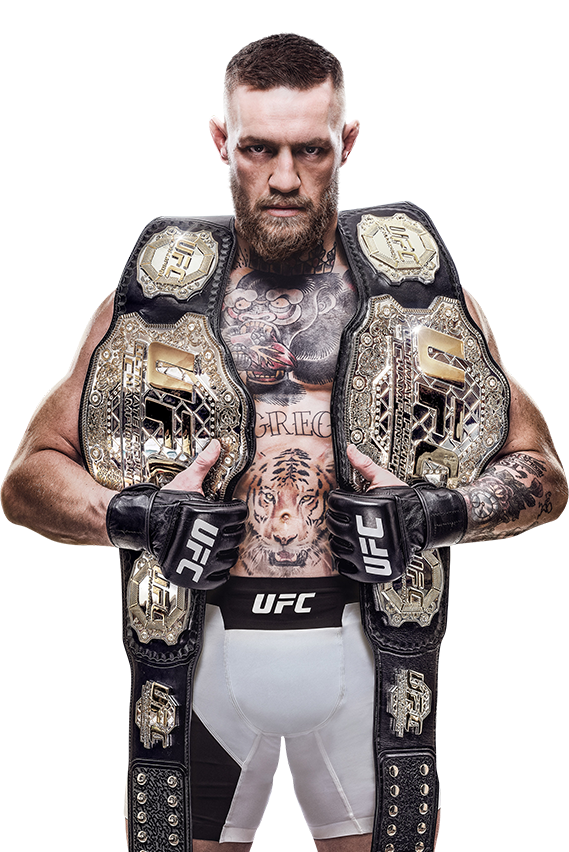
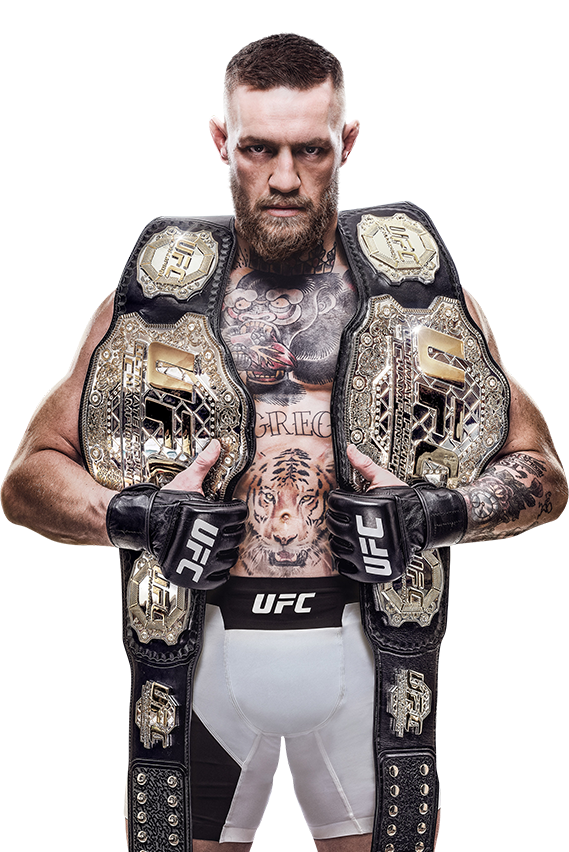

Conor McGregor
 

Vek, váha, výška, štýl boja
Conor McGregor má v súčasnosti 32 rokov, meria 172 centimetrov a váži 77 kilogramov. Zápasí však v ľahkej váhovej kategórii do 70 kg. McGregor je komplexný zápasník, no najlepšie sa cíti v postoji. Súperi majú strach najmä z jeho ľavačky, ktorou dokáže vypnúť takmer každého.
Začiatky MMA kariéry
Connor McGregor sa začal profesionálne MMA venovať koncom roka 2008, keď dal výpoveď zo svojho zamestnania, kde pracoval ako inštalatér a vrhol sa naplno do tréningu.
Obrovskou motiváciou pre neho bola aj návšteva na turnaji UFC 93, kde si povedal že jedného dňa chce v UFC stáť aj on.
Conor McGregor v UFC
UFC malo o McGregora enormný záujem a nakoniec v marci 2013 organizácia oznámila, že s ním podpísala zmluvu.
Debut v UFC si Conor McGregor odkrútil proti Marcusovi Brimageovi na turnaji UFC on Fuel TV 9.
Zápas skončil hneď po prvom kole, kedy „Notorious“ svojho súpera ukončil na TKO a zaslúžil si aj cenu za najlepší knockout večera.
Štatistiky a výsledky zápasov
Všetky zápasy v MMA: 27 zápasov (22 – 5 – 0)
- Výhry: 22 výhier – 19x TKO/KO, 1x submisia, 2x bodové rozhodnutie
- Prehry: 5 prehry
- Remízy: 0 remíz
Social Media